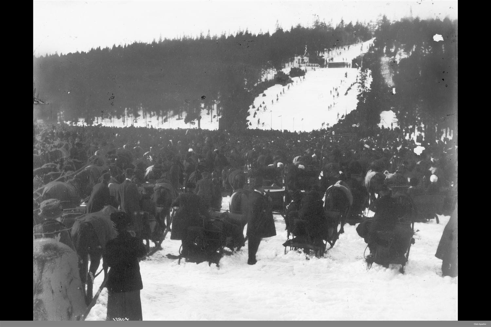
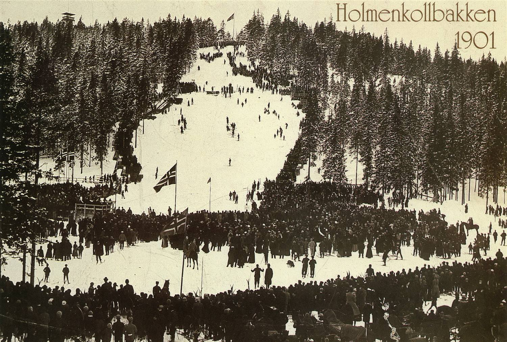
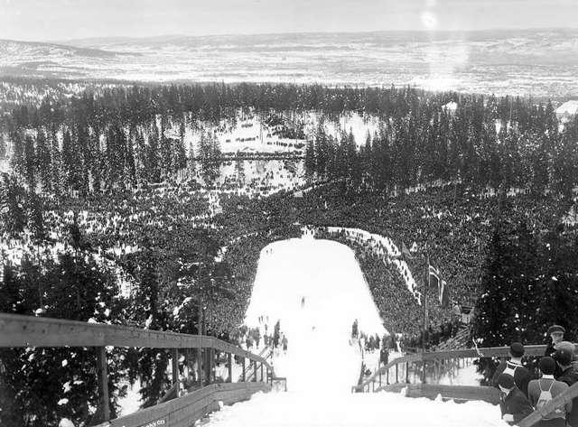
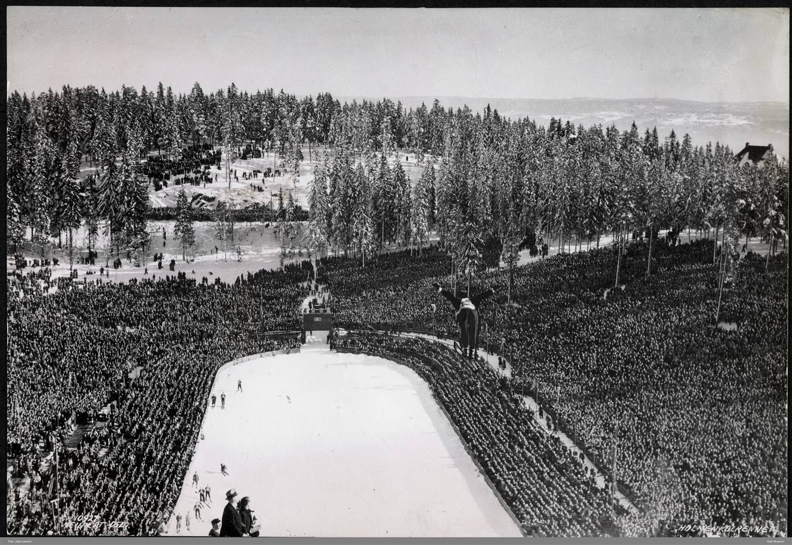
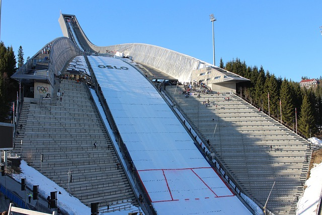
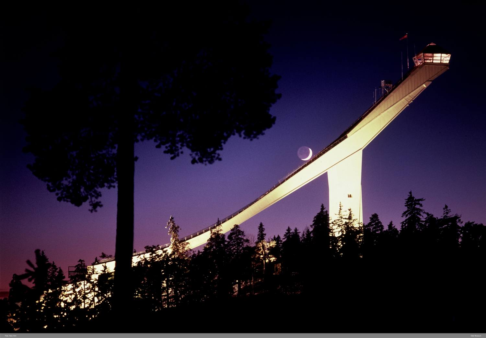

Bakken som ble verdenskjent
Трамплін, що став відомим на весь світ
The ski jump that became world famous
21,5 meter. Så langt fløy Arne Ustvedt i det aller første rennet i Holmenkollen i 1892, fra et hopp av snø og kvist midt i bakken. Det var nok til bakkerekord. I dag, godt over hundre år senere, svever de beste forbi 140 meter fra et stålstillas i østskråningen av Holmenkollåsen – og hele veien har bakken vært åstedet for noe av det mest folkekjære norsk idrett har å by på.

Fra Husebybakken til Holmenkollen
Forløperen het Husebyrennet og ble arrangert fra 1879. Men Husebybakken lå lavt og led ofte under dårlig vær og lite snø, og i 1892 bestemte Foreningen til Ski-Idrettens Fremme – Skiforeningen – seg for å flytte rennet opp i høyden, til Holmenkollen. Blant initiativtakerne var veidirektør Hans Krag, som hadde stått for den første veien opp til Holmenkollen i 1887, og Fritz Huitfeldt. Det første hoppet ble flyttet opp og ned i bakken etter snøforholdene, helt til et permanent hopp av stein ble anlagt i 1904.

Bakken som vokste og vokste
Det første fartsstillaset av tre kom i 1913. Det var 9,5 meter høyt og vakte stor forargelse blant skientusiaster som syntes det var altfor dristig. Naturen ga dem et argument: store snømengder fikk stillaset til å rase sammen dagen etter Holmenkollrennet i 1927 – men samme år reiste man et nytt og høyere stillas på 19 meter lenger opp i bakken. Til VM i 1940, som ble avlyst på grunn av krigen, fikk bakken et fartstårn i betong på 40 meter. Etter krigen fortsatte utbyggingen i takt med de store mesterskapene: til OL i 1952 ble hoppet og kulen bygd ut i tre etasjer med permanente tretribuner, dommertårn og kongetribune, og arkitekt Frode Rinnan satte sitt preg på bakken i flere tiår. Foran VM i 1982 fikk anlegget det utseendet mange husker best, med et 60 meter høyt fartstårn som lå 417 meter over havet – et svimlende utsiktspunkt over byen, fjorden og Marka.

Besserudtjernet – fra is til badebasseng
Nederst i bakken lå Besserudtjernet, og isen på tjernet dannet i de første årene selve sletta hopperne landet på. Fra 1931 ble tjernet tappet helt om vinteren, og ved senere utbygginger ble det gravd ut for å gjøre unnarennet brattere og lengre. Til slutt ble hele tjernet borte og sletta formet som et amfi med betongtribuner rundt. Men vannet fikk et nytt liv: i årene 1982–2007 ble amfiet fylt med vann om sommeren og ble et rundt seks meter dypt basseng. Her badet og fisket folk (fisken ble satt ut), det ble kjørt vannski og hoppet freestyle ut i vannet fra en egen bakke, og over enden av sletta sto en permanent scene – om sommeren rett over vannflaten.

Holmenkollen Fyr og dagens stålbakke
Foran ski-VM i 2011 ble det utlyst en arkitektkonkurranse for et helt nytt anlegg. Den ble vunnet av det danske firmaet Julien de Smedt Architects med det radikale forslaget «Holmenkollen Fyr», som blant annet ville rive den gamle bakken og legge Holmenkollveien i tunnel under sletta. Prislappen ble for høy, og et nedskalert utkast ble valgt. Rivingen startte i oktober 2008, og i 2010 sto en helt ny bakke ferdig: en frittstående, skrå fagverkskonstruksjon i stål. Tilløpet er rundt 97 meter langt med opptil 36 graders helning, og starthuset på toppen ligger cirka 65 meter over bakken – med kafé, bar og utsiktsplatå. En kabinheis bringer publikum opp, en stolheis bringer hopperne fra sletta og opp til kulen, og digre vindskjermer i stål skjermer selve hoppet. Rundt amfiet er det plass til 20 000 tilskuere. Bakken har i dag et kritisk punkt på 120 meter og en bakkestørrelse på 134 meter. Bakkerekorden tilhører Robert Johansson med 144 meter (9. mars 2019), mens Sara Takanashi har kvinnerekorden på 137,5 meter (4. februar 2016).

Holmenkollrennene – verdens eldste
Det er rennene som har gjort bakken verdenskjent. Holmenkollrennene har vært arrangert årlig siden 1892 og regnes blant de mest prestisjefylte konkurransene i verdenscupen. Kombinert har stått på programmet helt fra starten, femmila siden 1902; vinneren sammenlagt i kombinert får Kongepokalen, vinneren av hopprennet Damenes pokal. Folkemengdene har vært enorme: 106 000 tilskuere overvar det første hopprennet etter krigen i 1946, og under OL i 1952 var det 120 000. Kong Olav 5. deltok selv i hopp som kronprins i 1922 og 1923, og var til stede ved hele 72 Holmenkollrenn – første gang i 1911, siste gang i 1990. Utlendinger fikk det lenge tungt mot nordmennene; finske Anton Collin ble den første utenlandske vinneren, på femmila i 1922. Kvinnene kom inn for fullt med langrenn fra 1954, og fra 2000 har det også vært hopprenn for kvinner. I dag samles tradisjonsrennene og en rekke breddearrangement – som Barnas Holmenkolldag og Holmenkollmarsjen – under navnet Holmenkollen Skifestival.

Et nasjonalanlegg og et av landets mest besøkte turistmål
Holmenkollbakken er i dag bare én del av Holmenkollen Nasjonalanlegg, som siden 2003 er nasjonalanlegg for de nordiske skigrenene. Her finnes også skistadion for langrenn og skiskyting, Midtstubakken som normalbakke, rulleskibane og serveringssteder. Den såkalte Gratishaugen på østsiden er skilt fra resten av anlegget av Holmenkollveien, og gjennom hoppbakken – under kulen – går den gamle Kongeveien. I nærheten ligger Holmenkollen kapell, gjenreist i 1996 etter brann, og en bronsestatue av kong Olav 5. på ski sammen med hunden sin, avduket i 1984. Ved Skimuseet står en statue av Fridtjof Nansen, flyttet hit i 1964. Skiforeningen står for driften, og anlegget har vært Norges mest besøkte turistmål med over én million gjester i året.
21,5 метра. Саме так далеко пролетів Arne Ustvedt у найпершому змаганні в Holmenkollen 1892 року — з трампліну зі снігу й хмизу посеред схилу. Цього вистачило для рекорду трампліна. Сьогодні, понад сто років по тому, найкращі пролітають за позначку 140 метрів зі сталевої конструкції на східному схилі Holmenkollåsen — і весь цей час трамплін був місцем для чи не найулюбленішого, що може запропонувати норвезький спорт.
Від Husebybakken до Holmenkollen
Попередником був Husebyrennet, який проводили від 1879 року. Але Husebybakken лежав низько і часто потерпав від негоди й браку снігу, тож 1892 року Об’єднання сприяння лижному спорту — Skiforeningen — вирішило перенести змагання вище, до Holmenkollen. Серед ініціаторів був дорожній директор Hans Krag, який 1887 року проклав першу дорогу до Holmenkollen, та Fritz Huitfeldt. Перші роки сам трамплін переносили вгору й вниз схилом залежно від снігу, аж поки 1904 року не спорудили постійний кам’яний трамплін.
Трамплін, що ріс і ріс
Перша дерев’яна розгінна естакада з’явилася 1913 року. Вона була 9,5 метра заввишки і викликала велике обурення серед прихильників лиж, які вважали її надто зухвалою. Природа дала їм аргумент: великі снігопади обвалили естакаду наступного дня після Holmenkollrennet 1927 року — але того ж року вище схилом звели нову, вищу естакаду на 19 метрів. До чемпіонату світу 1940 року, скасованого через війну, трамплін отримав бетонну розгінну вежу на 40 метрів. Після війни розбудова тривала в ритмі великих змагань: до Олімпіади 1952 року трамплін і вилітну частину (кулен) розбудували у три поверхи з постійними дерев’яними трибунами, суддівською вежею та королівською трибуною, а архітектор Frode Rinnan визначав вигляд трампліна впродовж кількох десятиліть. Напередодні чемпіонату світу 1982 року комплекс набув вигляду, який багато хто пам’ятає найкраще, — з 60-метровою розгінною вежею на висоті 417 метрів над рівнем моря — запаморочливою оглядовою точкою над містом, фіордом і Маркою.
Besserudtjernet — від льоду до басейну для купання
Унизу схилу лежало озерце Besserudtjernet, і в перші роки саме лід на ньому утворював той майданчик, на який приземлялися стрибуни. Від 1931 року озерце взимку повністю спускали, а під час пізніших перебудов його викопали, щоб зробити вилітну частину крутішою й довшою. Зрештою озерце зникло зовсім, а майданчик сформували як амфітеатр із бетонними трибунами навколо. Та вода отримала нове життя: у 1982–2007 роках амфітеатр улітку наповнювали водою, і він ставав басейном завглибшки близько шести метрів. Тут люди купалися й рибалили (рибу запускали), каталися на водних лижах і стрибали фристайлом у воду з окремого трампліна, а над краєм майданчика стояла постійна сцена — улітку просто над водною гладдю.
Holmenkollen Fyr і сучасний сталевий трамплін
Напередодні чемпіонату світу з лижних видів 2011 року оголосили архітектурний конкурс на цілком новий комплекс. Його виграла данська фірма Julien de Smedt Architects із радикальним проєктом «Holmenkollen Fyr», який, серед іншого, передбачав знесення старого трампліна й прокладення дороги Holmenkollveien у тунелі під майданчиком. Ціна виявилася зависокою, тож обрали урізаний варіант. Знесення почалося у жовтні 2008 року, а 2010-го постав цілком новий трамплін — окремостояча похила фермова конструкція зі сталі. Розгін має близько 97 метрів завдовжки з нахилом до 36 градусів, а стартовий будинок на вершині розташований приблизно за 65 метрів над схилом — із кафе, баром та оглядовим майданчиком. Кабінний підйомник підіймає глядачів, крісельний — стрибунів від майданчика до кулена, а величезні сталеві вітрозахисні щити прикривають сам трамплін. Навколо амфітеатру вміщується 20 000 глядачів. Сьогодні трамплін має критичну точку 120 метрів і розмір 134 метри. Рекорд трампліна належить Robert Johansson — 144 метри (9 березня 2019 року), а жіночий рекорд має Sara Takanashi — 137,5 метра (4 лютого 2016 року).
Holmenkollrennene — найдавніші у світі
Саме змагання зробили трамплін відомим на весь світ. Holmenkollrennene проводять щороку від 1892 року, і вони вважаються одними з найпрестижніших змагань Кубка світу. Лижне двоборство було в програмі від самого початку, п’ятдесятикілометрівка — від 1902 року; переможець двоборства в загальному заліку отримує Кубок короля (Kongepokalen), а переможець стрибкового змагання — Дамський кубок (Damenes pokal). Натовпи були величезні: 106 000 глядачів спостерігали перше повоєнне стрибкове змагання 1946 року, а під час Олімпіади 1952 року їх було 120 000. Король Olav 5. сам брав участь у стрибках як кронпринц у 1922 і 1923 роках і був присутній аж на 72 змаганнях Holmenkollrennene — уперше 1911-го, востаннє 1990 року. Іноземцям довго велося важко проти норвежців; фін Anton Collin став першим іноземним переможцем — на п’ятдесятикілометрівці 1922 року. Жінки повноцінно ввійшли в програму з перегонами від 1954 року, а від 2000 року проводять і стрибкові змагання для жінок. Сьогодні традиційні змагання й низку масових заходів — як-от Barnas Holmenkolldag і Holmenkollmarsjen — об’єднує назва Holmenkollen Skifestival.
Національний комплекс і одне з найвідвідуваніших туристичних місць країни
Сьогодні Holmenkollbakken — лише одна частина Національного комплексу Holmenkollen (Holmenkollen Nasjonalanlegg), який від 2003 року є національним комплексом для нордичних лижних видів. Тут є також лижний стадіон для перегонів і біатлону, трамплін Midtstubakken як нормальний трамплін, траса для лижоролерів і заклади харчування. Так званий Gratishaugen зі східного боку відділений від решти комплексу дорогою Holmenkollveien, а крізь трамплін — під куленом — пролягає стара Королівська дорога (Kongeveien). Поблизу розташовані каплиця Holmenkollen, відбудована 1996 року після пожежі, та бронзова статуя короля Olav 5. на лижах разом зі своїм псом, відкрита 1984 року. Біля Лижного музею (Skimuseet) стоїть статуя Fridtjof Nansen, перенесена сюди 1964 року. За управління відповідає Skiforeningen, і комплекс був найвідвідуванішим туристичним місцем Норвегії — понад мільйон гостей на рік.
21.5 metres. That is how far Arne Ustvedt flew in the very first competition at Holmenkollen in 1892, from a take-off of snow and brushwood in the middle of the slope. It was enough for a hill record. Today, well over a hundred years later, the best soar past 140 metres from a steel scaffold on the eastern slope of Holmenkollåsen – and all along the way the hill has been the scene of some of the most cherished moments Norwegian sport has to offer.
From Husebybakken to Holmenkollen
The forerunner was the Huseby competition, held from 1879. But Husebybakken lay low and often suffered from poor weather and little snow, and in 1892 the Association for the Promotion of Skiing – Skiforeningen – decided to move the event up to the heights, to Holmenkollen. Among the initiators were roads director Hans Krag, who had built the first road up to Holmenkollen in 1887, and Fritz Huitfeldt. In the early years the take-off itself was moved up and down the slope according to the snow conditions, until a permanent take-off of stone was built in 1904.
The hill that grew and grew
The first wooden in-run scaffold came in 1913. It was 9.5 metres high and provoked great indignation among skiing enthusiasts who thought it far too daring. Nature gave them an argument: heavy snow caused the scaffold to collapse the day after the Holmenkollen competition in 1927 – but the same year a new and higher scaffold of 19 metres was raised further up the slope. For the 1940 World Championships, which were cancelled because of the war, the hill got a concrete in-run tower of 40 metres. After the war, development continued in step with the great championships: for the 1952 Olympics the take-off and knoll were built out over three storeys with permanent wooden stands, a judges' tower and a royal box, and architect Frode Rinnan left his mark on the hill for several decades. Ahead of the 1982 World Championships the facility got the appearance many remember best, with a 60-metre-high in-run tower standing 417 metres above sea level – a dizzying vantage point over the city, the fjord and the Marka forest.
Besserudtjernet – from ice to swimming pool
At the foot of the hill lay the small lake Besserudtjernet, and in the first years the ice on the lake formed the very flat the jumpers landed on. From 1931 the lake was drained completely in winter, and in later expansions it was dug out to make the landing slope steeper and longer. In the end the whole lake disappeared and the flat was shaped as an amphitheatre with concrete stands around it. But the water got a new life: in the years 1982–2007 the amphitheatre was filled with water in summer and became a pool about six metres deep. Here people swam and fished (the fish were stocked), water-skied and did freestyle jumps into the water from a separate slope, and over the end of the flat stood a permanent stage – in summer right above the water surface.
Holmenkollen Fyr and today's steel hill
Ahead of the 2011 Nordic World Ski Championships, an architecture competition was announced for an entirely new facility. It was won by the Danish firm Julien de Smedt Architects with the radical proposal “Holmenkollen Fyr” (Holmenkollen Lighthouse), which among other things would have demolished the old hill and put Holmenkollveien in a tunnel under the flat. The price tag was too high, and a scaled-down design was chosen. Demolition began in October 2008, and in 2010 a completely new hill stood ready: a free-standing, sloping steel truss construction. The in-run is around 97 metres long with up to a 36-degree gradient, and the start house at the top sits about 65 metres above the slope – with a café, bar and viewing platform. A cable car brings spectators up, a chair lift brings the jumpers from the flat up to the knoll, and huge steel wind screens shelter the take-off itself. Around the amphitheatre there is room for 20,000 spectators. The hill today has a critical point of 120 metres and a hill size of 134 metres. The hill record belongs to Robert Johansson with 144 metres (9 March 2019), while Sara Takanashi holds the women's record at 137.5 metres (4 February 2016).
The Holmenkollen competitions – the world's oldest
It is the competitions that have made the hill world famous. The Holmenkollen competitions have been held annually since 1892 and are counted among the most prestigious events in the World Cup. Nordic combined has been on the programme right from the start, the 50-kilometre race since 1902; the overall winner of the combined receives the King's Cup (Kongepokalen), the winner of the jumping competition the Ladies' Cup (Damenes pokal). The crowds have been enormous: 106,000 spectators watched the first jumping competition after the war in 1946, and during the 1952 Olympics there were 120,000. King Olav V himself took part in jumping as crown prince in 1922 and 1923, and was present at as many as 72 Holmenkollen competitions – the first time in 1911, the last in 1990. Foreigners long had a hard time against the Norwegians; the Finn Anton Collin became the first foreign winner, in the 50-kilometre race in 1922. Women came in fully with cross-country skiing from 1954, and from 2000 there has also been ski jumping for women. Today the traditional competitions and a range of mass events – such as Children's Holmenkollen Day and the Holmenkollen March – are gathered under the name Holmenkollen Ski Festival.
A national facility and one of the country's most visited tourist destinations
Holmenkollbakken is today only one part of the Holmenkollen National Facility (Holmenkollen Nasjonalanlegg), which since 2003 has been the national facility for the Nordic ski disciplines. There is also a ski stadium for cross-country and biathlon, the Midtstubakken hill as a normal hill, a roller-ski track and refreshment outlets. The so-called Free Hill (Gratishaugen) on the east side is separated from the rest of the facility by Holmenkollveien, and through the jumping hill – under the knoll – runs the old King's Road (Kongeveien). Nearby lie Holmenkollen chapel, rebuilt in 1996 after a fire, and a bronze statue of King Olav V on skis together with his dog, unveiled in 1984. By the Ski Museum (Skimuseet) stands a statue of Fridtjof Nansen, moved here in 1964. Skiforeningen runs the facility, which has been Norway's most visited tourist destination with over one million guests a year.
Kilder
Her er du
Slik blir du med på jakten
Finn stolpene rundt om i Vestre Aker, skann QR-koden og les historien om hvert sted. Velg et kallenavn – så samler du poeng for hvert nye sted du besøker. Ingen innlogging, ingen app.
Se kart og kom i gang